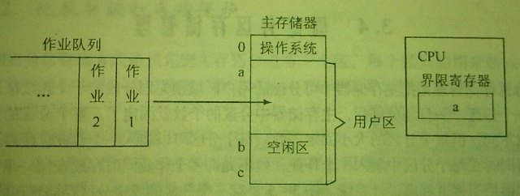
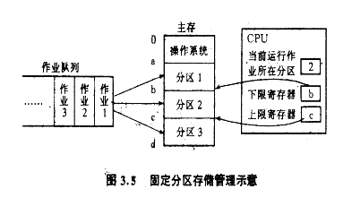
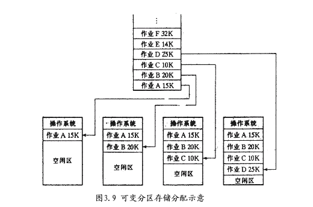
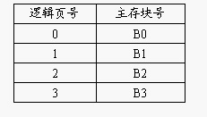

存储管理是对主存储器中的用户区域进行管理.包括主存空间的分配与回收,主存空间的共享与保护,地址转换以及主存空间的扩充等工作.
单用户存储管理是一种最简单的存储管理方式.在这种管理方式下,操作系统占用了一部分主存空间,其余剩下的主存空间都分配给一个作业使用,即在任何时刻主存储器中最多只有一个作业,比较适合于单道运行的计算机系统.
由于单用户连续存储管理每次只允许一个作业装入主存储器,因此不必考虑作业在主存储器中的移动问题.于是可采用静态定位方式进行地址转换,即在作业被转入到主存储是一次性地完成地址转换.处理器在执行指令时，要检查其绝对地址是否属于规定范围内的地址，如果属于，则按此地址访问，否则将产生“地址越界”中断。

把主存储器中可分配的用户区域预先划分成若干个连续区,每一个连续区称为一个分区.
内存划分成若干固定大小的分区，每个分区中最多只能装入一个作业。当作业申请内存时，系统按一定的算法为其选择一个适当的分区，并装入内存运行。由于分区大小是事先固定的，因而可容纳作业的大小受到限制，而且当用户作业的地址空间小于分区的存储空间时，造成存储空间浪费。
系统设置一张“分区分配表”来描述各分区的使用情况，登记的内容应包括：分区号、起始地址、长度和占用标志。其中占用标志为“0”时，表示目前该分区空闲；否则登记占用作业名（或作业号）。有了“分区分配表”，空间分配与回收工作是比较简单的。
固定分区管理可以采用静态重定位方式进行地址映射。
为了实现存储保护，处理器设置了一对“下限寄存器”和“上限寄存器”。当一个已经被装入主存储器的作业能够得到处理器运行时，进程调度应记录当前运行作业所在的分区号，且把该分区的下限地址和上限地址分别送入下限寄存器和上限寄存器中。处理器执行该作业的指令时必须核对其要访问的绝对地址是否越界。

为避免小作业被分配到大的分区中造成空间的浪费，可采用多作业队列的方法。即系统按分区数设置多个作业队列，将作业按其大小排到不同的队列中，一个队列对应某一个分区，以提高内存利用率。
此管理方式不是预先把主存储器中的用户区域划成分区,而是在作业要求装入主存储器时,根据作业需要的主存空间大小和当时主存空间使用情况来决定是否为作业分配一个分区.因此分区不是预先固定的,而是按作业的实际需要来划分的,分区的个数也不是预先确定的,而是由装入的作业数决定的.
这种处理方式使内存分配有较大的灵活性，也提高了内存利用率。但是随着对内存不断地分配、释放操作会引起存储碎片的产生。
采用可变分区存储管理，系统中的分区个数与分区的大小都在不断地变化，系统利用“空闲区表”来管理内存中的空闲分区，其中登记空闲区的起始地址、长度和状态。当有作业要进入内存时，在“空闲区表”中查找状态为“未分配”且长度大于或等于作业的空闲分区分配给作业，剩余的部分仍为空闲区,当空闲区不能满足需求时,作业暂时不能装入；当一个作业运行完成时，应将该作业占用的空间作为空闲区归还给系统。
可变分区管理方式常用的主存分配算法有:最先适应分配算法,最优适应分配算法,最坏适应分配算法.

可变分区存储管理一般采用动态重定位的方式，为实现地址重定位和存储保护，系统设置相应的硬件：基址/限长寄存器（或上界/下界寄存器）、加法器、比较线路等。
基址寄存器用来存放程序在内存的起始地址，限长寄存器用来存放程序的长度。处理机在执行时，用程序中的相对地址加上基址寄存器中的基地址，形成一个绝对地址，并将相对地址与限长寄存器进行计算比较，检查是否发生地址越界。
所谓碎片是指内存中出现的一些零散的小空闲区域。由于碎片都很小，无法再利用。如果内存中碎片很多，将会造成严重的存储资源浪费。解决碎片的方法是移动所有的占用区域，使所有的空闲区合并成一片连续区域，这一技术称为移动技术（紧凑技术）。移动技术除了可解决碎片问题还使内存中的作业进行扩充。显然，移动带来系统开销加大，并且当一个作业如果正与外设进行I/O时，该作业是无法移动的。
前面介绍的几种存储管理方式,要求作业的逻辑地址空间连续地存放在主存储器的某个区域中.当主存储区屋足够大的区域时,则作业无法装入,或必须移动某些作业后才能装入.
页式存储管理把作业的连续逻辑地址空间分散到几个不连续的主存区域,既可充分利用主存空间又可减少移动所花费的开销.不仅如此,还可采用虚拟存储管理技术,实现在较小的主存空间里运行较大的作业.
页式存储管理是把主存储器分成大小相等的许多区,每个区称为一块.与此对应,编制程序的逻辑地址也分成页,页的大小与块的大小相等.
逻辑地址:
系统可用一张“位示图”来登记内存中各块的分配情况，存储分配时以页面（块）为单位，并按程序的页数多少进行分配。相邻的页面在内存中不一定相邻，即分配给程序的内存块之间不一定连续。
对程序地址空间的分页是系统自动进行的，即对用户是透明的。由于页面尺寸为2的整数次幂，故相对地址中的高位部分即为页号，低位部分为页内地址。
系统为每个进程建立一张页表，用于记录进程逻辑页面与内存物理页面之间的对应关系。地址空间有多少页，该页表里就登记多少行，且按逻辑页的顺序排列，形如：

页式存储管理采用动态重定位，即在程序的执行过程中完成地址转换。处理器每执行一条指令，就将指令中的逻辑地址（p,d）取来从中得到逻辑页号(p)，硬件机构按此页号查页表，得到内存的块号B’，便形成绝对地址（B’,d）,处理器即按此地址访问主存。
当多个不同进程中需要有相同页面信息时，可以在主存中只保留一个副本，只要让这些进程各自的有关项中指向内存同一块号即可。同时在页表中设置相应的“存取权限”，对不同进程的访问权限进行各种必要的限制。
一方面：程序的有些部分是互斥的，即在程序的一次运行中，执行了这部分程序就不会去执行那部分程序
另一方面：程序的执行往往有局限性，某一时刻可能会循环执行某些指令或多次地访问某一部分的数据
当把有关作业的全部信息都装入主存储器后，作业执行时实际上不是同时使用这些信息，甚至于有些部分在作业执行的整个过程中都不会被使用到。
不把作业的全部信息同时转入主存储器中，而是将其中一部分装入，另一部分存放在磁盘上，作业执行过程中要用到那些不在主存储器中的信息时，再把它们装入主存储器中。
1，先进先出算法（First-In-First-Out）注：已经存在的页面无需再次调且指针不需要移动
2，最近最久未使用算法(Least Recently Used)--规定队首总是为最久未使用的页，而队尾总是最近才被访问的页。每访问一页时就要对队列调整一次，把当前访问的页调到队尾。每当发生缺页中断时总是选择队首所指示的页面调出
3，最近最不经常使用算法(Least Frequently Used)